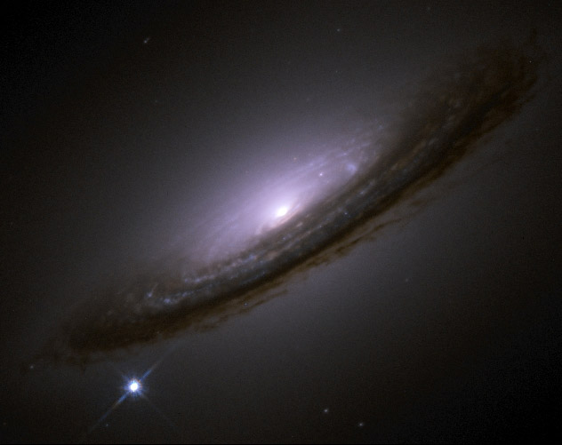

SNEWS Mailing Lists

Supernova 1994D graces Galaxy NGC 4526 with its presence. Courtesy of HubbleSite
You can sign up for the direct SNEWS alert mailing list here.
We have a new mailing list for updates, announcements and discussion of SNEWS issues.
Old SNEWS mailing list archives
The Working Group mailing list archives can be found on the  SNEWS Working Group page.
SNEWS Working Group page.